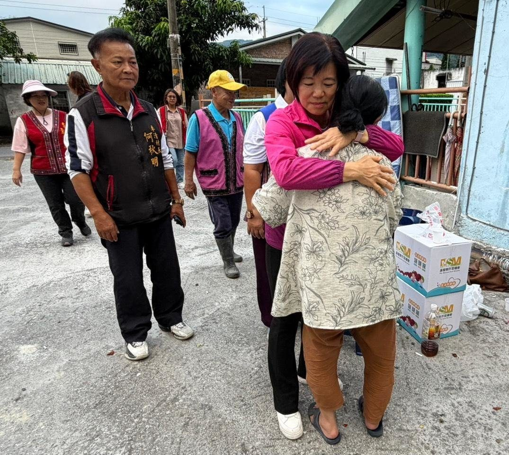

【溫暖送愛】三女力連夜送關懷！游淑貞攜手田桂花、李桂英陪伴火災家戶重建希望

可樂電子報小編/編輯
暗夜惡火無情，人間處處有溫情。花蓮縣卓溪鄉卓清村日前發生嚴重住宅火警，造成多戶家庭無家可歸。聽聞災情後，吉安鄉長游淑貞立即展現跨鄉鎮的救援情誼，連夜驅車南下馳援。

游淑貞鄉長會同卓溪鄉長田桂花、卓溪鄉民代表會主席李桂英，組成「溫暖三女力」關懷小組，親赴火災現場與臨時安置所，將社會各界的愛心與慰問金親手交到受災戶手中。
「不要怕，我們都在這裡陪你！」游淑貞在現場給予受災鄉親溫暖的擁抱，許多災民在經歷生死交關與財產付之一炬的打擊後，感受到這份雪中送炭的關懷，不禁紅了眼眶。

田桂花鄉長表示，非常感謝吉安鄉公所在第一時間伸出援手，不僅帶來實質的物資與急難救助金，更重要的是給予災民心靈上的強大支持，充分展現了花蓮十三鄉鎮市「同島一命、患難與共」的兄弟情誼。
李桂英主席也指出，後續的重建之路依然漫長，鄉代會將全力監督並協助公所，為受災戶爭取更多的安置資源與重建經費。
這場跨越百公里的夜間送暖行動，不僅為卓溪鄉的災民點亮了重建的希望之光，更完美詮釋了地方首長視民如親的服務精神。未來，三位女力首長承諾將持續攜手合作，陪伴受災家戶早日走出陰霾，重建溫暖的家園。